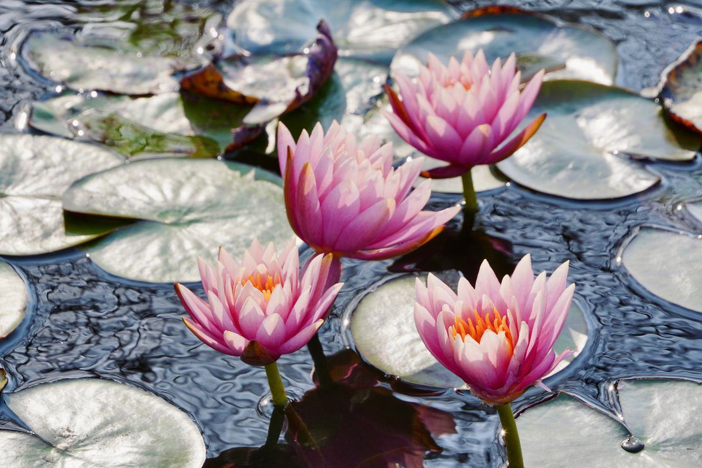

Une terrasse, un patio, un coin de pelouse de trois mètres sur deux : un petit bassin y apporte du reflet, du mouvement et une faune qu'on n'attendait pas. Mais un faible volume d'eau est aussi le plus exigeant à équilibrer. Voici ce qui marche vraiment sous les 5 m², et ce qu'il faut renoncer à y mettre.

Il faut poser le paradoxe d'emblée : plus un bassin est petit, plus il est difficile à tenir. Un bassin de 20 m² et 1,20 m de profondeur amortit tout — une canicule, une chute de feuilles, un excès de nourriture. Un bac de 300 litres, lui, encaisse tout de plein fouet. Sa température peut grimper de six ou sept degrés dans une après-midi de juillet, geler intégralement en janvier, et une poignée de granulés non consommés suffit à faire virer l'eau en trois jours.
Cela ne condamne pas le projet, loin de là. Cela impose simplement de renverser la logique : sur un petit volume, on mise sur la végétation et l'implantation plutôt que sur la puissance de la filtration, et on accepte de ne pas y mettre de poissons — ou très peu. Ceux qui l'acceptent obtiennent un point d'eau charmant et quasiment autonome. Ceux qui veulent y transposer un vrai bassin à poissons se battent contre la physique.
Du plus simple au plus abouti, avec leurs domaines de pertinence respectifs.
Un demi-fût de chêne, une grande jarre en terre cuite, une auge de pierre : 80 à 200 litres, à poser sur une terrasse. On l'étanchéifie si nécessaire avec une bâche EPDM découpée, on y installe un nénuphar nain et deux ou trois plantes de berge en paniers.
Aucun poisson, aucune pompe indispensable. C'est le point d'eau le plus simple et le plus rapide à réussir — et souvent le plus élégant sur une terrasse.
Une coque rigide de 500 à 1 500 litres, calée dans une fouille au sable, avec ses paliers de plantation intégrés. Comptez une journée de travail pour une personne équipée d'une bêche et d'un niveau.
C'est le format d'entrée du bassin enterré. Vérifiez la profondeur annoncée : beaucoup de modèles plafonnent à 40-50 cm, insuffisant pour hiverner des poissons.
Bois, acier corten, pierre reconstituée ou bac maçonné, de 40 à 70 cm de haut. L'avantage décisif : la margelle sert d'assise, on est au niveau de l'eau, et le rebord haut constitue une sécurité réelle pour les jeunes enfants.
Son défaut est thermique — les parois exposées à l'air chauffent et refroidissent vite. Une isolation intérieure ou un habillage épais atténue nettement le phénomène. Voir notre page bassin hors sol.
Pour 3 à 5 m², une bâche EPDM sur géotextile permet une forme libre, des berges en pente douce et une profondeur choisie — 80 cm si l'on veut envisager quelques poissons rustiques.
C'est la formule qui offre le meilleur rendu naturel dans un petit espace, à condition de soigner le masquage de la bâche en périphérie. Notre page bassin de jardin détaille la pose.
Trois contraintes physiques découlent directement du petit volume. Les connaître permet de choisir les bonnes solutions plutôt que de subir.
Sous 500 litres, l'eau suit l'air presque en direct. En été, elle peut dépasser 30 °C, ce qui réduit fortement l'oxygène dissous et stresse toute forme de vie aquatique.
Solutions : ombrer un tiers de la surface avec des flottantes, placer le bassin à l'ombre l'après-midi, enterrer le bac plutôt que le laisser hors sol, et compléter avec de l'eau fraîche pendant les canicules.
Un bassin de moins de 60 cm de profondeur peut geler dans toute son épaisseur, particulièrement s'il est hors sol. La glace complète tue les poissons et peut faire éclater un contenant rigide.
Solutions : retirer les poissons pour l'hiver, poser un flotteur antigel ou une cloche pour maintenir un point de dégazage, vider partiellement un bac hors sol fragile. Ne jamais casser la glace au marteau : l'onde de choc est mortelle pour la faune.
Peu d'eau signifie peu de dilution : le moindre apport de nutriments fait basculer le milieu. C'est la cause d'à peu près toutes les eaux vertes de petits bassins.
Solutions : jamais de terreau comme substrat, uniquement des paniers avec du sable et des graviers ; pas de nourrissage excessif ; compléter à l'eau de pluie plutôt qu'à l'eau du robinet, souvent riche en phosphates et en nitrates.
La question des poissons revient systématiquement. Voici les seuils honnêtes, volume par volume.
| Volume d'eau | Poissons envisageables | Filtration | Budget indicatif |
|---|---|---|---|
| 80 – 300 L (jarre, demi-tonneau) | aucun | facultative | 150 – 400 € |
| 300 – 1 000 L | aucun — faune spontanée seule | petite pompe d'animation | 500 – 1 000 € |
| 1 000 – 2 000 L | quelques vairons ou gambusies | pompe + filtre simple | 700 – 1 500 € |
| 2 000 – 3 000 L | 3 à 5 poissons rouges | pompe + filtre + UV | 1 000 – 2 000 € |
| 3 000 – 5 000 L | petit peuplement mixte | filtration dimensionnée | 1 500 – 2 500 € |
| Moins de 10 000 L | jamais de carpes koï | — | voir bassin à koïs |
Côté plantes, trois familles suffisent et elles font tout le travail : des flottantes pour l'ombre (nénuphar nain, laitue d'eau — attention aux espèces réglementées, votre pépiniériste vous orientera), des oxygénantes immergées comme l'élodée ou le cératophylle, et deux ou trois plantes de berge en paniers pour la verticalité : iris nain, prêle, menthe aquatique. Le détail des espèces figure sur notre page plantes aquatiques.
La récompense arrive vite : dès la première saison, un petit bassin attire libellules, demoiselles, notonectes et oiseaux venus boire. Une pente douce ou une simple pierre affleurante leur permet d'entrer et de sortir sans se noyer — c'est le meilleur aménagement possible pour quelques euros.
Moins de dix minutes par semaine en saison, et deux interventions plus sérieuses dans l'année. C'est le principal argument du petit format.
Retirer les feuilles accumulées au fond, diviser les plantes trop denses, remettre la pompe en service et surveiller le voile vert du redémarrage, qui se résorbe seul.
Compléter le niveau à l'eau de pluie, retirer les algues filamenteuses à la main, surveiller la température lors des canicules et ombrer si nécessaire.
Poser un filet avant la chute des feuilles — c'est le geste qui évite 80 % des problèmes du printemps suivant — et tailler les plantes après les premières gelées.
Arrêter ou ralentir la pompe, installer un flotteur antigel, retirer les poissons si le volume est trop faible, et vider partiellement les contenants rigides fragiles.
Le calendrier d'entretien complet détaille chaque intervention. Bonne nouvelle sur le plan administratif : en règle générale, un bassin de moins de 10 m² ne nécessite aucune formalité d'urbanisme — ce qui couvre tous les projets de cette page. Le plan local d'urbanisme peut toutefois prévoir des exceptions, notamment en secteur protégé ou aux abords d'un monument : un appel en mairie ne coûte rien. Voir notre page réglementation.
La plupart des petits bassins se réalisent très bien soi-même. Un professionnel devient utile dès que le point d'eau s'inscrit dans un aménagement plus large.
De 500 à 2 500 € tout compris selon la formule : 150 à 400 € pour un demi-tonneau planté, 700 à 1 500 € pour un préformé avec pompe et végétaux, jusqu'à 2 500 € pour un bac hors sol bien fini.
Dès que le bassin s'accompagne d'une terrasse, d'un ruisseau, d'un éclairage ou d'un massif planté à redessiner. Le point d'eau ne représente alors qu'une part du chantier, et le tarif au m² d'un aménagement complet se raisonne globalement.
Beaucoup de petits bassins sont des projets d'essai. Si l'envie devient un bassin d'agrément de 3 000 à 15 000 €, voire une piscine naturelle à partir de 20 000 €, nous transmettons votre demande à un professionnel partenaire sous 24 h.
Demander mon devis gratuit →Petit point d'eau ou aménagement complet : décrivez-le en 2 minutes, réponse sous 24 h.